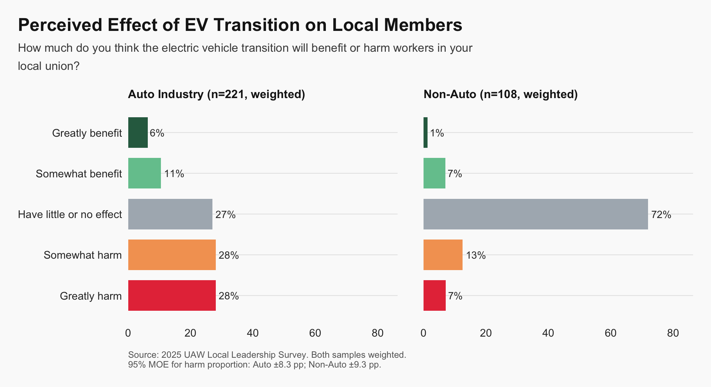
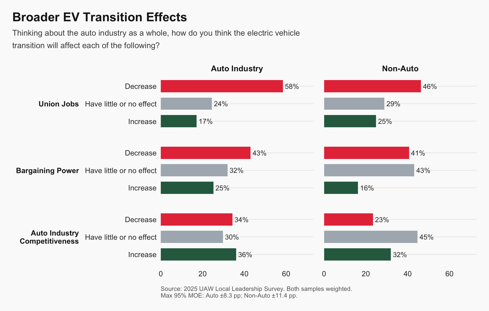
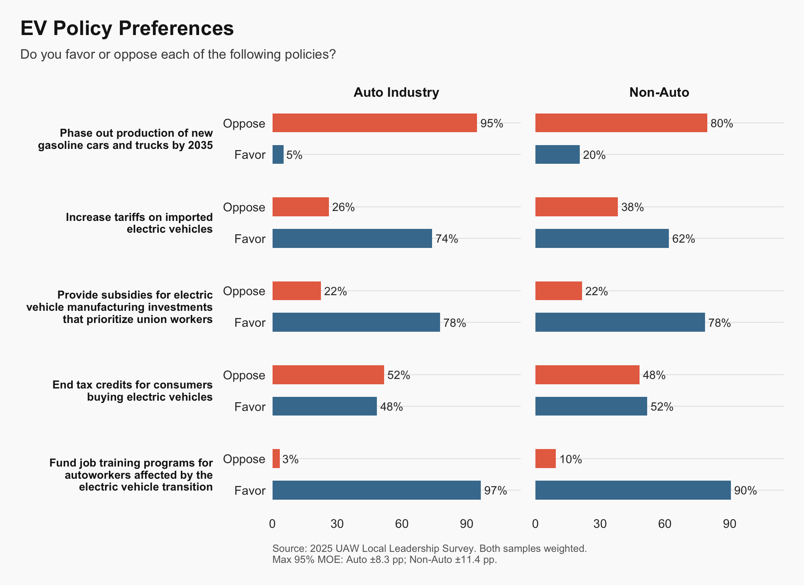
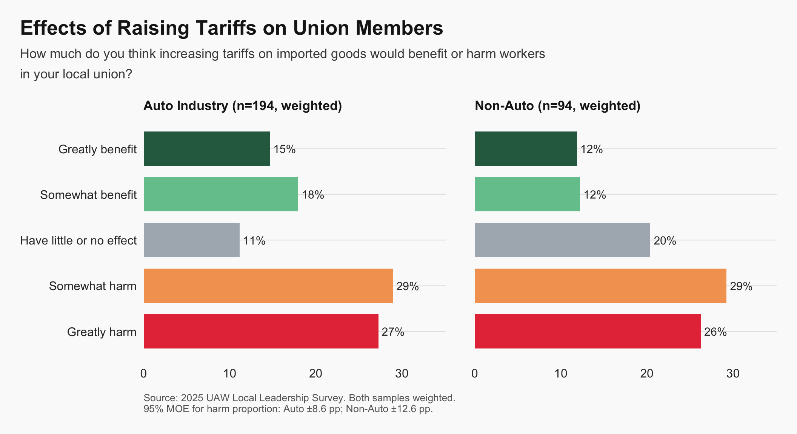
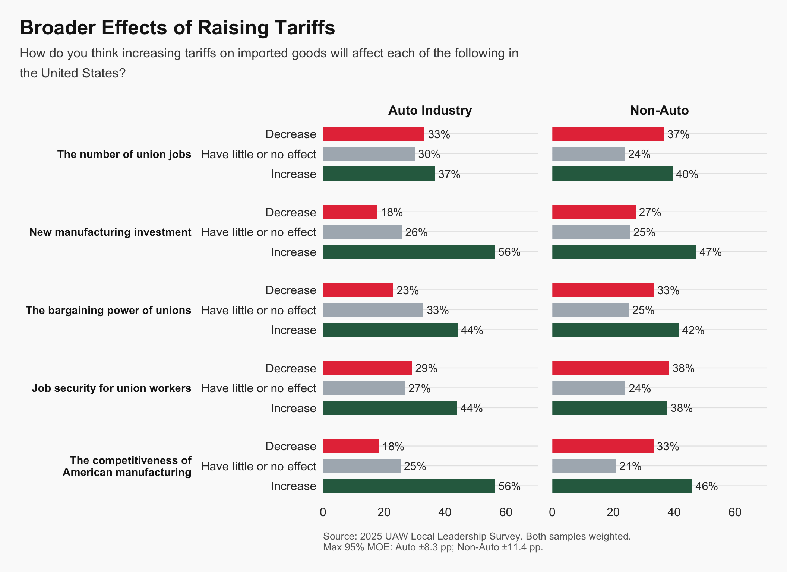
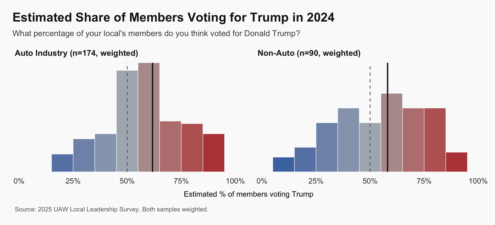

Summary
This report presents results from the first UAW Local Leadership Survey. Local union leaders occupy a pivotal position between national union strategy, employers, and rank-and-file members. Yet systematic evidence on their views is limited.
The United Auto Workers represents workers across regions and industries. Local leaders confront these differences directly in bargaining, political engagement, and member representation. Their perspectives offer an early signal of how broader economic and political changes are being interpreted inside the union.
Researchers at the University of Michigan surveyed 365 officers from 194 locals from February 18, 2025 – September 25, 2025. The confidential questionnaire asked about timely issues affecting the UAW, such as the electric vehicle transition, tariffs, and the 2024 presidential election.
The findings below summarize areas of consensus and disagreement among local leaders.
Highlights:
- Local officers express divided views on the electric vehicle transition. Among locals with automotive production (N=221), 56% believe the EV transition will harm their members, and only 5% support a government policy to phase out new gasoline car and truck production by 2035. These results point to uncertainty about how climate policy intersects with job security inside the union.
- Local officers are similarly divided on trade policy and tariffs. Across all locals (N=365), 56% anticipate that raising tariffs on imported goods would harm their members, while 48% believe higher tariffs would decrease or have little effect on the competitiveness of American manufacturing. Views on protectionism are therefore not uniformly aligned with traditional pro-tariff narratives.
- Local officers report that a majority of their members voted for Donald Trump in the 2024 presidential election. On average, officers estimate that 62% of members voted for Trump in locals with automotive production and 58% in non-automotive locals, underscoring the electoral strength of Republican candidates among some union members.
The sections that follow present the survey results in greater detail. Results are reported separately for automotive and non-automotive locals to reflect differences in members’ economic exposure. Survey responses are weighted to adjust for potential non-response bias and to represent the full population of UAW locals.
Electric Vehicles


Trade and Tariffs


2024 Presidential Election

These estimates reflect local officers’ perceptions of how their members voted. They do not represent official union endorsements or positions on any candidate.
Background and FAQ
Researcher Contact Information
Alexander F. Gazmararian
Assistant Professor, University of Michigan
e-mail: agaz@umich.edu
Why We Did This Survey
Our research aims to document how local union leaders view critical issues facing their members, from the electric vehicle transition to trade policy to electoral politics. By gathering input directly from those who represent workers on the ground, we can provide evidence-based insights into the challenges and opportunities facing American labor.
What Is a Local Union Officer?
A local union is a chapter of a larger union that represents workers at a specific workplace or in a specific geographic area. Local union officers are members elected by their peers to lead the local. Common positions include president, vice president, recording secretary, financial secretary, and trustees. Officers handle day-to-day union business, represent members in grievances and negotiations, and serve as a link between the rank-and-file membership and the national union.
How We Contacted Local Officers
This survey was designed to reach officers in every UAW local union. We constructed a list of local union addresses from LM-2 and LM-3 filings, which are annual financial reports that unions are required to submit to the U.S. Department of Labor. We mailed survey invitations to officers in each local and emailed invitations to officers with e-mail addresses available in public records. We sent a follow-up mailer to officers who did not respond to the initial invitation. Survey participation was voluntary and unpaid.
Response Rate
We contacted 4806 local officers by mail and e-mail to participate; the response rate was 8%. Out of the 458 locals in the sampling frame, at least one officer from 194 locals (42%) responded to the survey.
Sample Representativeness
The following table provides aggregate summary statistics for survey respondents. All data are de-identified and presented only as group averages to protect respondent confidentiality. No individual responses can be identified.
| Characteristic | Value |
|---|---|
| Age (years) | 53.5 |
| Female (%) | 26 |
| Non-white (%) | 26 |
| College degree (%) | 16 |
| More than 10 years as local officer (%) | 79 |
| Officer Roles (%) | |
| President | 32 |
| Vice President | 15 |
| Recording Secretary | 10 |
| Financial Secretary | 15 |
| Sergeant-at-Arms | 6 |
| Trustee | 19 |
| Guide | 7 |
| Unit Chair | 10 |
| Steward | 11 |
| Industry (%) | |
| Auto production | 68 |
| Non-auto | 32 |
| UAW Region (%) | |
| Region 1 | 7 |
| Region 1A | 2 |
| Region 1D | 22 |
| Region 2B | 20 |
| Region 4 | 15 |
| Region 6 | 3 |
| Region 8 | 21 |
| Region 9 | 7 |
| Region 9A | 2 |
| Note: Values are means or percentages. Officer roles are not mutually exclusive (respondents may hold multiple positions). |
How Survey Weights Are Calculated
Survey weights adjust for differences between respondents and the broader population of UAW locals. Because some types of locals may be more or less likely to respond to a survey, we use statistical weighting to ensure that our estimates better reflect the full population of UAW local unions.
Weights are calculated on the following local-level characteristics: region, membership, and audit status.
When multiple officers from the same local respond, each officer’s response is first down-weighted by the number of respondents from that local. This prevents locals with more respondents from being over-represented.
Conflict of Interest and Funding
The UAW Local Leadership Survey is an independent, academic project. It is not affiliated with the UAW or any other labor organization. Funding came from internal research funds at the University of Michigan.
How We Protect Respondent Confidentiality
Protecting respondent confidentiality is a top priority. All survey data have been de-identified, meaning that no names, contact information, or other personally identifiable information are included in the analysis dataset.
Results are presented only in aggregate form — as group averages, percentages, and distributions — so that no individual response can be identified. We do not report statistics for subgroups small enough that individual respondents might be identifiable.
This research was reviewed and approved by the Institutional Review Board at the University of Michigan.
When Is the Next Survey?
We plan to survey local leaders again in 2026. If you are interested in participating, please contact us at agaz@umich.edu.